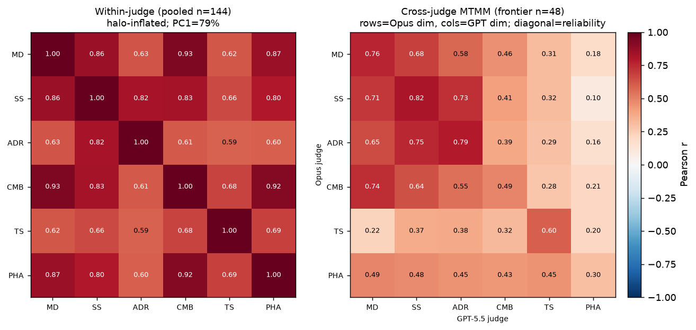

← v1 report · ← frontier rerun · bridge probe · judge self-preference · v2 methodology →
A construct-validity audit of the rubric — and the cross-judge method that separates a real second factor from single-rater halo.
PhysTutorBench scores tutors on six dimensions and combines them with fixed weights. If the six are really one thing, those weights are decoration. Within a single judge, that fear looks justified: the dimensions show a mean inter-correlation of 0.74, a Cronbach's α of 0.94, a first principal component explaining 79% of variance, and six dimension-pairs above r = 0.8 (MD–CMB = 0.93). By that view the rubric is nearly unidimensional. But a single judge rating all six dimensions from one transcript manufactures halo — one overall impression bleeding across the ratings. Removing it with a cross-judge multitrait-multimethod matrix (correlate one judge's dimension against the other judge's) tells a different story: on the same conversations, mean inter-dimension correlation falls 0.62 → 0.43, the dominant factor falls 79% → 54%, and same-dimension cross-judge agreement beats cross-dimension agreement on 52 of 60 Campbell–Fiske comparisons. The rubric carries real multidimensional signal — but unevenly: scaffolding, answer-restraint, and diagnosis are reliable and distinct (cross-judge r = 0.76–0.82), while pedagogical-harm-avoidance does not replicate across judges (0.30) — the very dimension that carried the largest self-preference inflation. The practical read: trust ~three behavioral dimensions, fix or down-weight harm-avoidance and conceptual-model-building, and stop letting the composite double-count a general "good tutoring" factor.
A six-dimension rubric makes a claim: that misconception diagnosis (MD), scaffolding (SS), answer-disclosure restraint (ADR), conceptual model building (CMB), transfer success (TS), and pedagogical harm avoidance (PHA) are distinguishable aspects of tutoring worth scoring and weighting separately. If instead they are six noisy readings of a single latent "this tutor is good," then the rubric is over-specified, the composite weights are arbitrary, and reporting six numbers oversells the instrument's resolution. Construct validity is the test of that claim.
The naive test — correlate the six dimensions across conversations — is biased toward finding redundancy, because one judge assigns all six scores after one reading. A favorable overall impression lifts every dimension together; an unfavorable one lowers them together. That shared-rater variance (halo) inflates inter-dimension correlations whether or not the underlying constructs are distinct.
| Within-judge statistic (pooled, n = 144) | value | reading |
|---|---|---|
| Mean |inter-dimension correlation| | 0.74 | very high |
| Cronbach's α (six dimensions as one scale) | 0.94 | near-redundant internal consistency |
| First principal component (variance share) | 79% | one dominant factor |
| Eigenvalues | 4.73, 0.55, 0.45, … | Kaiser keeps 1 factor |
| Pairs with r ≥ 0.8 | 6 | MD–CMB 0.93, CMB–PHA 0.92, MD–PHA 0.87, MD–SS 0.86, … |
Taken at face value, this is a one-factor instrument. A measurement reviewer would (rightly) ask why six weighted numbers are reported when α = 0.94 and a single component absorbs four-fifths of the variance.

On the same 48 frontier conversations, switching from one rater to two changes the picture:
| Quantity | within-judge | cross-judge |
|---|---|---|
| Mean inter-dimension correlation (heterotrait) | 0.62 | 0.43 |
| First principal component (variance share) | 79% | 54% |
The drop of 0.19 in mean inter-dimension correlation is single-rater halo — roughly a third of the apparent redundancy is a method artifact. And the dominant factor shrinks from 79% to 54% of variance: there is a real second (and likely third) dimension that the within-judge matrix hides. Crucially, mean convergent reliability (0.63) exceeds mean heterotrait correlation (0.43), and 52 of 60 Campbell–Fiske comparisons pass (a dimension agreeing with itself across judges more than with other dimensions). The dimensions are not interchangeable — they carry distinct, judge-reproducible signal.
The cross-judge convergent diagonal is each dimension's reliability: how well two independent frontier judges reproduce that score. It is strikingly uneven.
| Dimension | cross-judge reliability | verdict |
|---|---|---|
| SS · Scaffolding strategy | 0.82 | reliable & distinct |
| ADR · Answer-disclosure restraint | 0.79 | reliable & distinct |
| MD · Misconception diagnosis | 0.76 | reliable & distinct |
| TS · Transfer success | 0.60 | moderate (and the most distinct — see the pale TS row) |
| CMB · Conceptual model building | 0.49 | weak; tangled with MD (within-judge r = 0.93) |
| PHA · Pedagogical harm avoidance | 0.30 | fails — below even the mean heterotrait (0.43) |
The three concrete behavioral moves a tutor makes — how it scaffolds, whether it withholds the answer, whether it diagnoses the misconception — are reliable and discriminable. The two most interpretive dimensions are not: CMB blurs into diagnosis, and PHA's reliability of 0.30 means two strong judges barely agree on whether a tutor avoided pedagogical harm — its convergent value is lower than its correlation with other dimensions, the textbook Campbell–Fiske failure, and the source of most of the 8 violations.
python construct_probe.py # -> prints the within-judge stats, cross-judge MTMM, and halo isolation # -> writes docs/construct_probe.json + docs/assets/construct_validity.png
Logic in src/validation/dimensionality.py (Cronbach α, eigenvalue summary, cross-judge MTMM, Campbell–Fiske, redundancy flags — reusing construct_validity's Pearson/matrix helpers and judge_bias's cross-judge alignment); tests in tests/test_dimensionality.py.
v1 report · frontier rerun · bridge probe · judge self-preference · v2 methodology · concept paper · top ↑
Methods note. Within-judge: Pearson correlation matrix, Cronbach's α, and eigen-decomposition over the pooled 144 scores (halo- and pooling-inflated; an upper bound on unidimensionality). Cross-judge: multitrait–multimethod matrix over the 48 dual-scored frontier conversations, diagonal = same-dimension convergent reliability (range-restricted; a lower bound). All values are LLM-judge ratings; reproducible from saved scores via python construct_probe.py.